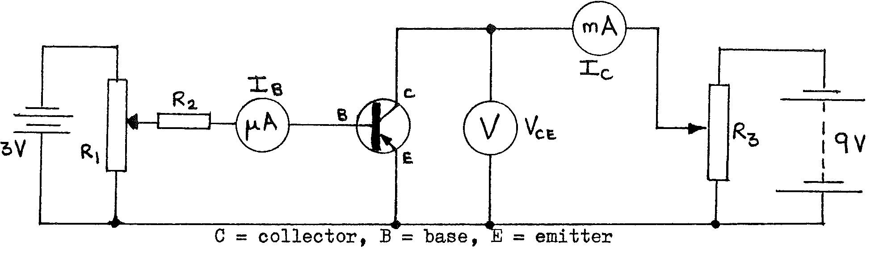
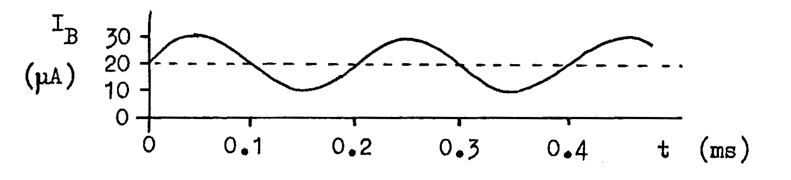

G2-1: Transistor Characteristics¶
Apparatus¶
3V battery; 9V battery; 2 rheostats (high resistance); resistor \(\text{R}_2\) (approx. 50 k\(\Omega\)); voltmeter (0-5 Vdc); ammeter (\(\approx 50 \mu\)A fsd); ammeter (\(\approx\) 3 mA fsd); transistor (pnp); connecting leads (12 short); 2 sheets graph paper.

Instructions¶
Set up the circuit as above, but do not connect the batteries until a teacher has checked the circuit (to avoid damaging the ammeters or transistor). In the experiment, when not taking readings, leave the batteries disconnected.
EXPERIMENT 1¶
To investigate the ‘transfer characteristics’ of the transistor. The transistor acts as a current amplifier: the size of the large current \(I_C\) depends on the size of the small current \(I_B\). The circuit used above is called a ‘common emitter’ circuit.
1: Procedure¶
- Set \(V_{CE}\) to 4V using rheostat \(\text{R}_3\). Ensure that this remains constant (adjust \(\text{R}_3\) again later as necessary).
- Set \(I_B\) to 0 using \(\text{R}_1\). Read and note \(I_B\) and \(I_C\).
- Increase \(I_B\) a little using \(\text{R}_1\), and read and note \(I_B\) and \(I_C\). Continue increasing \(I_B\) and reading the ammeters until \(I_C =\) 3 mA.
- Tabulate the readings of \(I_E\), \(I_C\), and the value of \(V_{CE}\).
1: Analysis¶
Plot a graph of \(I_C\) against \(I_B\), labelling the curve with the value of \(V_{CE}\) used.
Find the gradient of the straight-line section of the curve. Then:
\[\text{Current gain } \beta = \frac{\Delta I_C}{\Delta I_B} = \text{gradient}\]
EXPERIMENT 2¶
To study how \(I_C\) varies when \(V_{CE}\) is changed, for certain fixed values of \(I_B\). The graph obtained is called the ’output characteristic’ of the transistor.
2: Procedure¶
- Set \(I_B = 0\) using \(\text{R}_1\). Starting with \(V_{CE} = 0\), and little by little increasing \(V_{CE}\) up to 5V, take a set of readings of \(I_C\) and \(V_{CE}\) and note the value of \(I_B = 0\).
- Increase \(I_B\) to \(10 \mu\)A, and obtain another set of readings of \(I_C\) and \(V_{CE}\) as in step 1.
- Repeat the procedure with \(I_B = 20 \mu\)A then \(30 \mu\)A.
- Tabulate the sets of readings of \(I_C\) and \(V_{CE}\), noting the value of \(I_B\) for each set.
2: Analysis¶
- Plot a graph of \(I_C\) vs. \(V_{CE}\) to obtain four curves. Label each curve with the appropriate value of \(I_B\) used.
Questions¶
When \(I_B = 0\), \(I_C\) should be zero for all \(V_{CE}\). However all transistors have some ‘leakage current.’ What is the value of the leakage current \(I_C\) when \(V_{CE} = 4\)V?
What is the approximate minimum \(V_{CE}\) so that a variation in \(I_B\) between \(0\) and \(30 \mu A\) produces a large change in \(\ I\_C\)? (In practice the supply voltage is usually set between this value and a certain maximum. The maximum depends on the ‘breakdown voltage’ of the junctions).
In use as an amplifier, an AC input voltage makes \(I_B\) vary with time. For example:

Use the value of \(\beta\) to make a graph of \(I_C\) against time.
- If a resistor \(\text{R} = 1\)k\(\Omega\) is connected in
series with the collector \(C\), so that \(I_C\) flows through it; draw a graph of the potential difference (p.d.) across this resistor against time.
What is the frequency of these AC currents and p.d.?
Draw a diagram to show while the pnp transistor is conducting:
- Electron flows and conventional currents through the three terminals.
- Electron & hole movements inside the transistor (may be simplified).